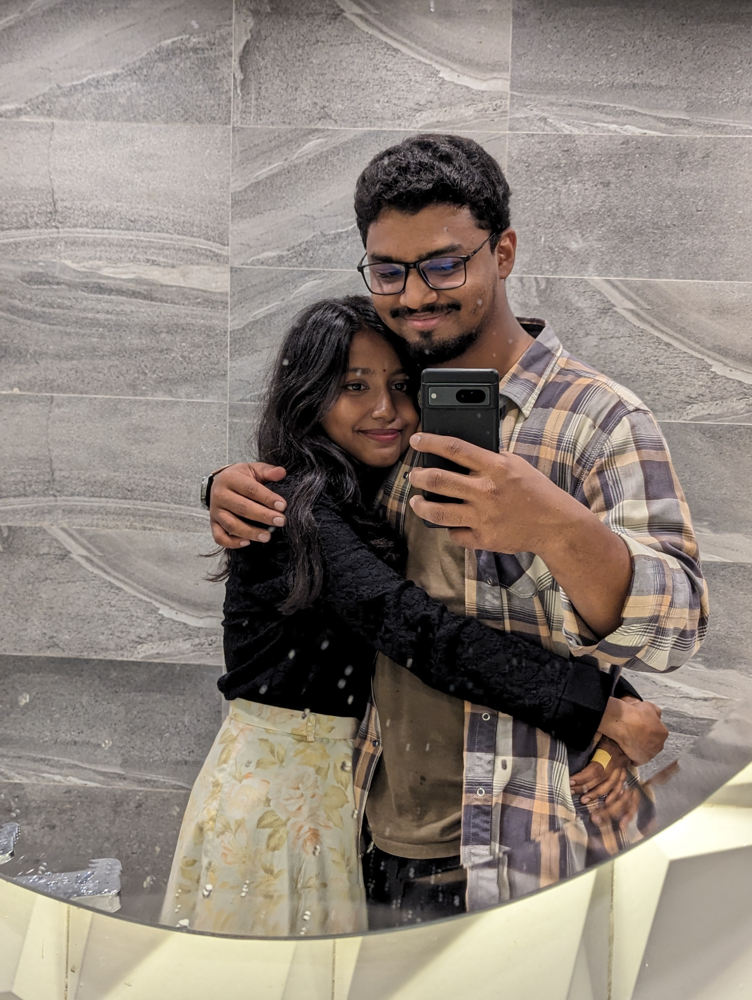
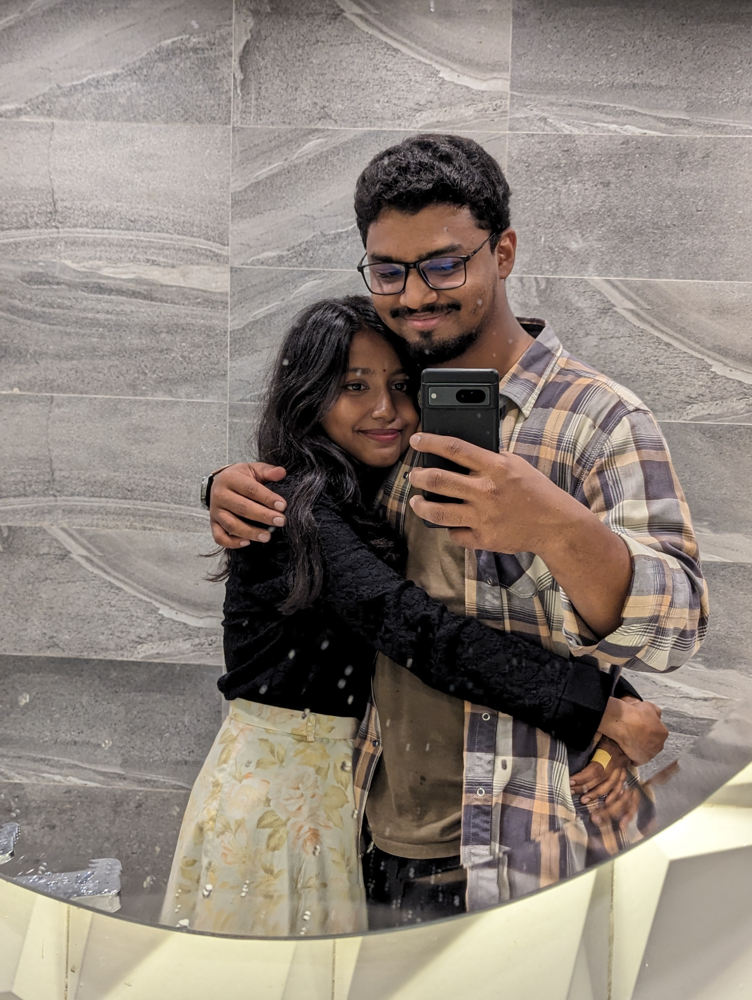

Dear Ony,
You’ve probably realized by now just how dumb and clumsy I am.
I can’t even understand how I manage to mess things up so badly.
Sending an email of all things to wish you on our anniversary?
It’s pathetic, and it just proves I am a loser.
I might be the worst boyfriend any woman could ever have.
I'm sooo, soo sorry that you ended up with someone like me.
I really wish we could at least see each other today.
But "LONG DISTANCE :(".
Long dintance with you from what?
Well everything actually started from class 10 when Araf said,
"Mama Ony ekta woman of culture." From that moment, I imagined you in my frame.
I sometimes looked at you being
very curious, I always wanted to know more about you.
A veryy quick girl who moves 25 thousand times in a second (haha).
You know what? I wanted to have conversations with you
(without thinking that I am a creep). But for idk what reason
I never had a chance to talk to you
(ki niye kotha bolbo bhai its gonna be creepy and akward if I randomly start talking!!).
Koti koti bochorrr por
when I saw your account of Facebook I smashed the 'add
friend' button. Still I never found a way to approach you.
But you almost regularly reacted to my posts. I used to
notice them like I would get happy damn she liked this she
liked that. Well all these and after that CU exam. Trust
mee my eyes locked into you (not in a creepy way). From
that I started thinking about you more frequently. Your
posts/ your reacts to my post this small interaction
used to make me happy. Then the day you got chance at
SUST trust me It made me soo happy for you. I thought jodi
amio SUST e chance paitam maybe we could have spent some time hanging out.
We I didn’t got into SUST but but guess what the universe gave me chance with the
water rocket contest. Man first thing came to mind is I will definitely meet you.
The day when I arrived at Sylhet I wanted to meet you instantly.
I told you to come in to morning so that we could hangout more.
But you decided to come afternoon 😡. Finally when
you came with a Cute red dress instantly caught my eyes.
I was like this '😮' when I saw you. Being with you and hearing you yapp about eta sheta
was really cute. I then thought umm!!! Will she be mine? But I always thought
you were out of my league. And this made me sad. Then we slowly
started talking. Each and every conversation with you
always made me happy. Then I slowly started to fall in love with you.
I didn’t even know how it was happening. I became more and
more comfy with you. The day when you said about the other
guy approaching you, my everything collapsed. I felt very
excluded, very pushed away and sad. Then I wanted to escalate
things asap. I didn’t know how but I wanted to. First I
thought when you come back to Dhaka I will tell you
everything but It was also a risk that might be late.
I needed to do something. Then 29th of January came.
I don’t even know how I did that but yeah I had to do it
knowing that there is a 1% chance. I had in mind that it’s
a do or die. And before I knew it, that random girl from 9th grade
became the most important person in my life who I can’t
live without. And an amazing journey begins. The first holding hands to first
car date to all the late night calls I love everything
about you. Then the first Sylhet dates. The most
beautiful 3 days I have ever had. It was sooo dreamy.
I loved the way you look at me. I loved the way you will always
hold my left hand. I love how you let me pet you and baby
you. I loved holding your soft hand. I wanna hold your cold
hand and make it warm always. Your voice heals me.
You are a truly perfect human being—kind, thoughtful, and
genuinely good at heart. I really really am
lucky to have you in my life.
You are always in my mind. Whatever I do I only
think about you. You run around my head always. I know
I am the worst boyfriend ever. But know that I always love
you more than anything. No matter how much I say I love you
it is always less. And I do understand you a lot. I just
keep messing things up (I am sorryyyyy). I am trying to do better.
I sometimes make
you mad Umm no all the time actually but know that I love
you with all my everything. I will keep doing that even if
I die. We have to go a long way. As we have to go long long way there will be
complications. But I want you to keep trusting me and
believe me whatever I do. I will do everything to make
sure you are safe and our relationship is strong. We will fight everything
together.
Tons of love for you my beautiful wifey. I love everything you do
for me sweetheart. Every single details about you makes me more than happy.
Don’t ever change. And promise me that you will always be with me
no matter what.
HAPPY ANNIVERSARY BABE
I LOVE YOU A LOTTTTTT
Yours ever,
Shuvo